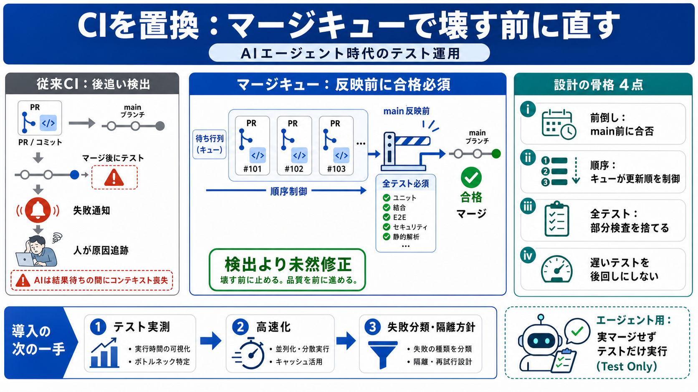

.exe - Wikipedia
In Windows, OS/2, and DOS, .exe is the filename extension for a file that is runnable as a native executable computer pr…

CIの役割を“前倒し”に
AIエージェントが継続的に変更を投げる時代は、「マージ後に検出するCI」より「マージ前に直すマージキュー」が合う。
後追いCIの限界
従来CIは「失敗したら人が原因追跡できる」ことを前提に後追い検出する。しかしAIはコード理解が浅く、テスト結果が返るころにコンテキストが失われやすい。
検出より“未然修正”
「壊す人・直す人」を分ける設計では、AIの高頻度変更に対して通知駆動の修正が詰まる。目的は“壊した後の追いかけ”ではなく“壊す前に通す”。
マージキューの核
マージキューでは「マージ前に全テスト」を走らせる。部分テストや遅いテストの後送りは、AIの連続投入に対して未検査領域の事故を残す。
壊さない設計（4点）
AI時代の“壊す前に直す”には、検出タイミングの前倒し・順序制御・全テスト・遅いテスト分離の回避が要点になる。
なぜ“遅いテスト”が破綻する
AIが毎日（あるいはより高頻度で）変更を投入するなら、遅いテストをキューから外すと、未検査のまま不具合が増殖する。結果として、日々“ロボットの後片付け”を人が背負う。
エージェント用コマンド
マージキュー本体に加え、「実マージせずテストだけ実行する」コマンドを渡す。エージェントは自分の変更が壊れないことを先に確認し、壊れたものを押し付けにくくなる。
CIとマージキューの違い
違いは“検出するタイミング”と“通過条件”にある。CIは後追いで壊れを検出し、マージキューは反映前に壊れを潰す。
よくある代替への回答
オートリバートは“動く”が、後追いCIの価値（修正を通じた学習と原因到達の機会）を失う。さらにAIはコンテキスト喪失があり、リトライで吸収しきれない可能性が高い。
導入判断の要点
全テストをマージ前に回すには計算資源が必要だが、AI時代の運用負担（後片付け）を減らす投資になる。自組織ではテスト速度・失敗分類・隔離方針を実測して段階導入するのが安全。
In Windows, OS/2, and DOS, .exe is the filename extension for a file that is runnable as a native executable computer pr…
Join/Login Business Software Open Source Software For Vendors Blog About More + Articles + Create + SourceFor…
Previous Close 87.81 Open 88.21 Bid 81.77 x 100 Ask 94.46 x 100 Day's Range 87.06 - 90.00 52 Week Range 84.99…
and disabstraction. It's a whole bunch of CPU instructions that aren't allowed to run in DOS mode. [...] binaries, instr…
# .exe ## What is an .exe? An .exe is a very common file type. The .exe file extension is short for “executable.” Thes…